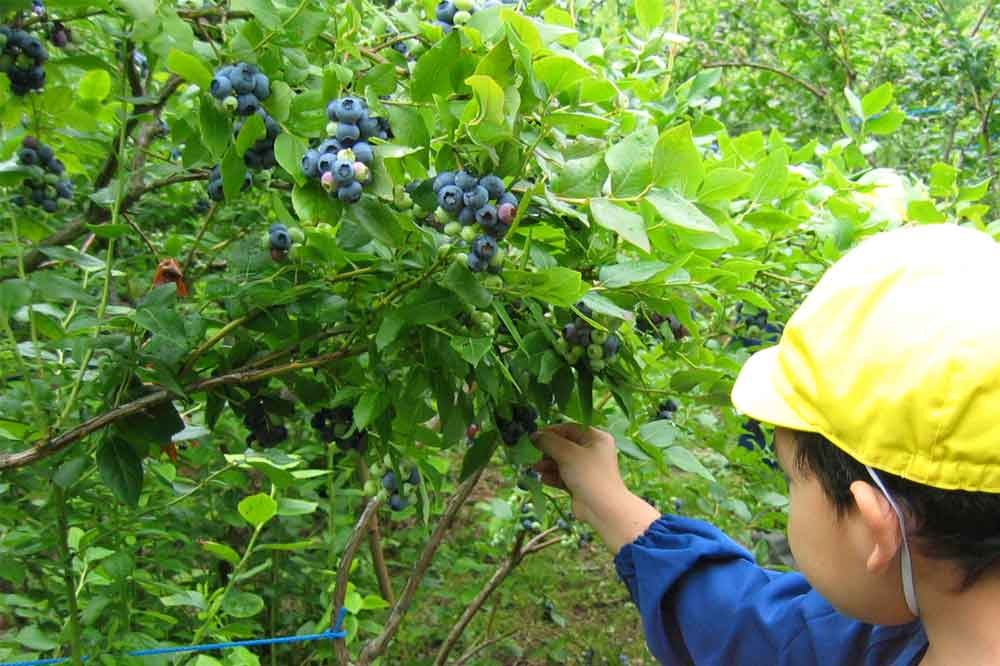
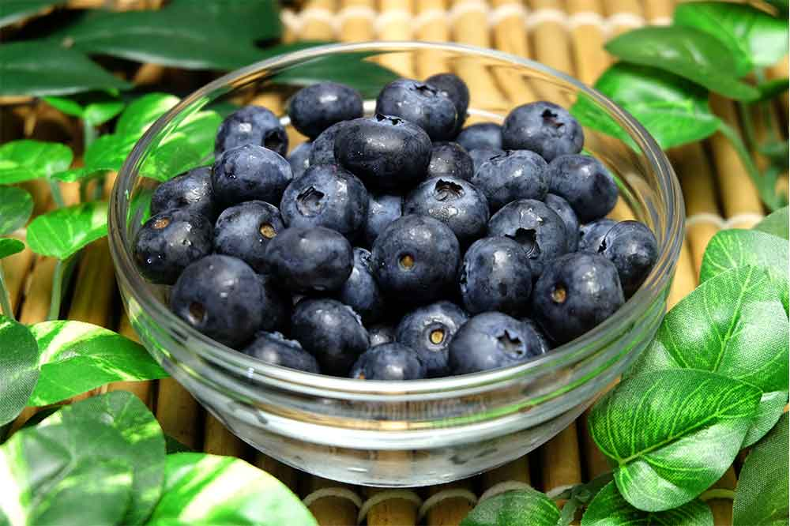

今年の開園情報
最新の営業状況やお知らせは、下記カレンダーと公式X（ツイッター）でご確認ください。収穫状況により当日の受付が変わる場合があります。
※現在はサンプル表示です。ご自身のカレンダーを表示するには、Googleカレンダーの設定 → カレンダーの統合 → 埋め込みコードのsrcをコピーし、上記iframeに差し替えてください。カレンダーは「一般公開」に設定する必要があります。
青森のブルーベリー農園
根岸FARMへようこそ
知りたいことを、目的のままにすばやく見つけられます。
お知らせ
根岸観光農園は2020年より有機JASを取得し、それに伴い名称を『根岸FARM（ファーム）』と改めさせていただく事になりました！
化学肥料や農薬などの化学合成物質を、一切使用しないで栽培しています。
ですので、お子様にも農薬に敏感な方にも安心して食べて頂ける数少ないブルーベリーです。
農園に来る・お買い求め・贈り物。目的によって見る場所が分かれています。営業期間・予約・駐車場などの要点一覧もご利用ください。
ブルーベリー狩りや直売所でのお買い物、農園見学など、来園に必要な情報をまとめました。
最新の営業状況やお知らせは、下記カレンダーと公式X（ツイッター）でご確認ください。収穫状況により当日の受付が変わる場合があります。
※現在はサンプル表示です。ご自身のカレンダーを表示するには、Googleカレンダーの設定 → カレンダーの統合 → 埋め込みコードのsrcをコピーし、上記iframeに差し替えてください。カレンダーは「一般公開」に設定する必要があります。
ブルーベリー狩り・持ち帰り量など、料金体系はシーズンやメニューにより変動することがあります。正確な金額はお電話・メール、または来園前に公式情報でご確認ください。
※ここに料金表や注意事項を掲載できます（準備ができ次第、追記してください）。
予約の有無：ブルーベリー狩りなど体験型の来園では、混雑緩和・受入人数の都合により事前予約が必要となることがあります。直売のみのご利用で予約不要の場合もありますので、来園前に内容をご確認ください。
予約方法：お電話またはメールにて、希望日・人数・お連れ様の構成（お子様含む）をお知らせください。連絡先はこちら
体験の概要はカードをタップしてご覧ください。

季節のブルーベリー狩り体験（要予約・時期により変動）。
青森の自然の中で、摘みたてのブルーベリーを楽しめる体験です。お子様連れでも安心の完全無農薬農園です。
お電話またはメールにて事前予約をお願いします。収穫状況により受付を終了する場合があります。
青森県八戸市付近。下記地図またはGoogleマップで「根岸FARM」で検索してください。
お車でお越しの場合の駐車場の場所・台数・大型車の可否など、来園前にご確認ください（テキスト・写真をここに追加できます）。
農園で栽培している品種の特徴・収穫時期の目安などを掲載するエリアです。品種名と味わいの説明を追記すると、来園前のイメージが湧きやすくなります。
※実際によくいただく質問に差し替えてください。
生のブルーベリーからジャム・加工品まで。お買い求めと発送に関する情報です。
摘みたての生果を直売・予約にてお届けしています。詳細はカードをタップしてご覧ください。

送料無料！（沖縄県・一部離島を除く）
摘みたての新鮮なブルーベリー。直売・予約受付中。
送料無料！（沖縄県・一部離島を除く）
摘みたての新鮮なブルーベリーを直売・予約にてお届けしています。完全無農薬の自然農法で栽培した、お子様にも安心の品質です。
お電話またはメールにてご予約・お問い合わせください。収穫時期により在庫が変動します。
農園で手作りしたジャムや加工品です。内容はカードをタップしてご覧ください。
農園で手作りしたジャムや加工品をご用意しています。
農園で収穫したブルーベリーを使用し、手作りでジャムや加工品を作っています。添加物を抑えた、素材の味を大切にした商品です。
直売・予約にて承ります。お電話またはメールでお問い合わせください。
容量（g・パック数）ごとの価格、セット販売の有无などをここに整理すると、来店・通販のどちらでも迷いが減ります。
※価格表の掲載準備ができたら、このブロックを差し替えてください。
発送の可否：商品によって異なります。生のブルーベリーは、クール便等での発送に対応している場合があります（沖縄・離島など例外あり）。ジャム等の加工品は常温・レターパック等の事例もあるため、品目ごとにご確認ください。
サイト上の「送料無料」等の表記は条件付きの一例です。お届け地域・日付・品温・箱数が確定した時点で、必ずお問い合わせにて可否と送料をご確認ください。
生果は収穫シーズンに合わせて販売期間が限られます。ジャム等の加工品は時期によって在庫が異なる場合があります。
当日の在庫や受付終了は、公式X（ツイッター）やお電話での確認が確実です。ここに「本日のメモ」を追記する運用も可能です。
贈答用の組み合わせ、箱、送料、注文の流れをひとまとめにしました。
生果の詰め合わせ、ジャムセット、メッセージカードの同封の可否など、贈答向けラインナップを記載するエリアです。
生果・加工品の一覧は「買いたい方へ」もご覧ください。
冷蔵・常温の区分、お届けまでの目安日数、繁忙期の注意など、贈り物として送るときに必要な案内をここにまとめられます。
ギフト箱のサイズ、のし・ラッピング対応、写真掲載用のスペースです。実物のイメージが伝わると選びやすくなります。
電話・メール・フォームなど、贈答注文の受け方と必要事項（届け先・日時指定）を記載してください。
地域別の送料、複数箱時の計算、沖縄・離島の扱いを表形式などで示すと、贈り先を決めたあとがスムーズです。
※営業時間・予約はお電話またはメールでお問い合わせください。
農園の風景
ブルーベリー
収穫の様子
直売所
季節の景色
加工品